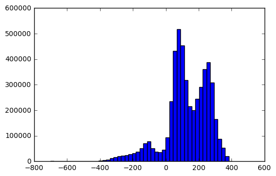
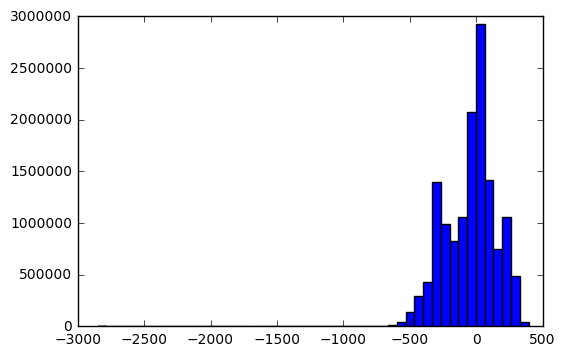
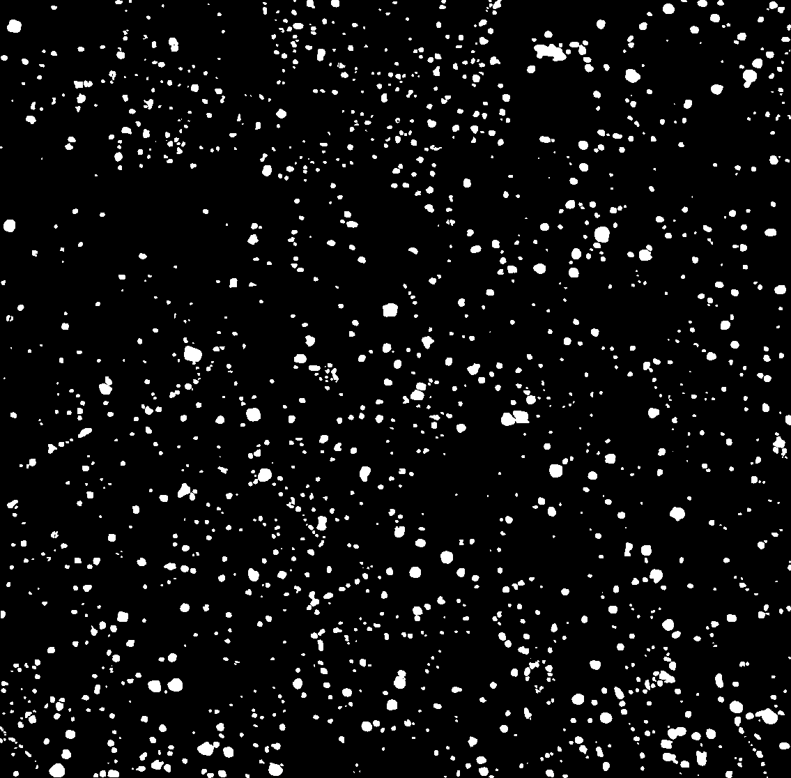
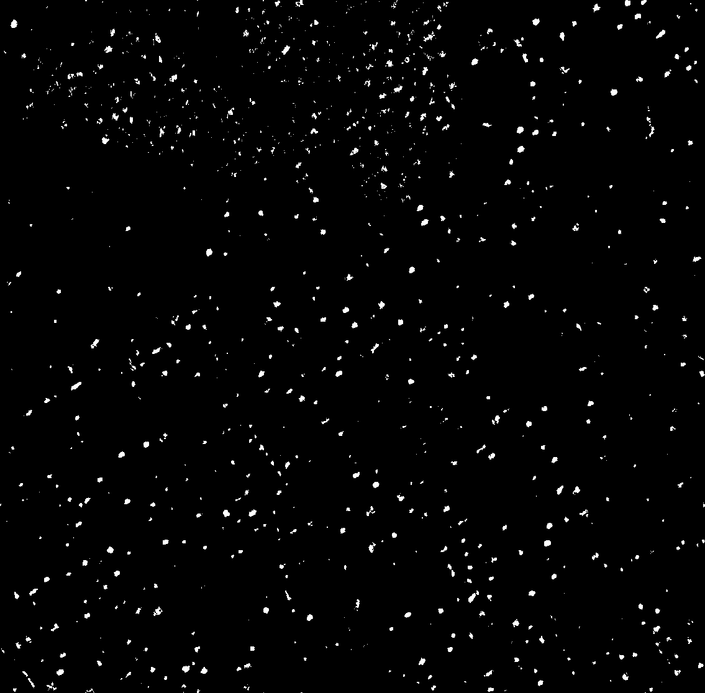

Stephanie Booth's First Forray into Image Analysis
Kaggle hosted a satellite imagery feature detection challenge in late 2016, and while it wasn't realistic to compete while I'm still learning the basics, it still posed a good exercise for applying the fundamentals of image processing and image analysis. I plan to return to this data set periodically as I learn more.
Starting Off: Understanding and visualizing the data (slide right)
I wanted to try my hand at d3, and I also wanted to get a sense of what kind of features were included in my dataset, and what it looks like in real life...
This was easier said than done, when you account for the images being stored as 16-bit, polygons scaled according to a separate file, and repeated failures in parsing WKT format...
Eventually I got it to render, and I think I finally have enough of an understanding of the data to start the analysis.
Analysis (slide right)
I wanted to start off small, so I tried to see what I could do with just the tree data
I started off performing Principle Component Analysis (PCA), a process entailing compressing the dimensions with minimal information loss to more easily find trends.
I did this and then divided my dataset between trees and not trees, and drew histograms of the two.

Figure 1: Histogram of Trees data on 0th Axis, RGB values

Figure 2: Histogram of Not Trees data on 0th Axis, RGB values
Unfortunately, the shapes of my histograms are too close to really differentiate. I also tried this while converting the RGB values to spherical coordinates, with similar results.
So let's try some filters then!

Figure 3: Locations of trees on one image (image mask)

Figure 4: Hits for fractional power filter (alpha = 0.65)
Kinser (2010) describes Fractional Power Filters as a means to detect similar shapes regardless of size, rotation, and location. I tried this approach and achieved mild success. About 70% of my hits were true positives.
Future Work
When I get back to this dataset, I plan to attempt texture analysis, and eventually neural networks.